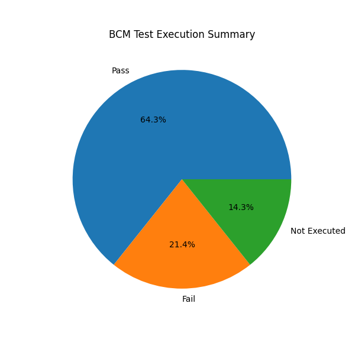

Generated On: 08-Jul-2026 06:39 PM
Total Test Cases : 14
Pass Percentage : 64.29%
Fail Percentage : 21.43%
Not Executed Percentage : 14.29%

| TC ID | Description | Ignition | Speed | Expected | Actual | Status | Remarks |
|---|---|---|---|---|---|---|---|
| TC01 | Verify that all vehicle doors are locked successfully when the Lock button on the key fob is pressed | OFF | 0 | Door Locked | Door Unlocked | FAIL | Driver Door Open, Rear Left Door Open, Boot Door Open, Lock Failed |
| TC02 | Verify that all vehicle doors are unlocked successfully when the Unlock button on the key fob is pressed | OFF | 0 | Door Unlocked | Door Unlocked | PASS | Driver Door Open, Unlock Successful |
| TC03 | Verify that door unlock operation is allowed using the central unlocking switch when vehicle speed is below 10 km/h | ON | 30 | Door Locked | Door Locked | PASS | Vehicle Speed Above Limit |
| TC04 | Verify that door unlock operation is blocked using the central unlocking switch when vehicle speed exceeds 10 km/h | ON | 9 | Door Unlocked | Door Unlocked | PASS | Unlock Allowed |
| TC05 | Verify that central unlock request is allowed or not at the vehicle speed of 60 km/h | ON | 60 | Door Locked | Door Locked | PASS | Driver Door Open, Rear Left Door Open, Vehicle Speed Above Limit |
| TC06 | Verify that automatic door locking is activated when vehicle speed exceeds 20 km/h | ON | 15 | Door Locked | Door Unlocked | FAIL | Speed Below Auto Lock Threshold |
| TC06 | Verify that automatic door locking is activated when vehicle speed exceeds 20 km/h | ON | 25 | Door Locked | Not Executed | NOT EXECUTED | One or more mandatory fields are blank. |
| TC07 | Verify that key fob lock request is rejected when the driver door is open | ON | 15 | Door Unlocked | Door Unlocked | PASS | Driver Door Open, Lock Failed |
| TC08 | Verify that all vehicle doors are locked successfully using the central locking switch | OFF | 0 | Door Locked | Door Unlocked | FAIL | Driver Door Open, Central Lock Failed |
| TC09 | Verify that all vehicle doors are unlocked successfully using the central unlocking switch | OFF | 0 | Door Unlocked | Door Unlocked | PASS | Rear Right Door Open, Unlock Allowed |
| TC10 | Verify that lock request through the key fob is rejected when the boot door is open and the vehicle is parked | OFF | 0 | Door Unlocked | Door Unlocked | PASS | Boot Door Open, Lock Failed |
| TC11 | Verify lock request when some fields are missing | OFF | 0 | Door Locked | Not Executed | NOT EXECUTED | One or more mandatory fields are blank. |
| TC12 | Verify that all vehicle doors are locked successfully when the Lock button on the key fob is pressed | OFF | 0 | Door Locked | Door Locked | PASS | Lock Successful |
| TC13 | Verify that all vehicle doors are unlocked successfully when the Unlock button on the key fob is pressed | OFF | 0 | Door Unlocked | Door Unlocked | PASS | Unlock Successful |
Description: Verify that all vehicle doors are locked successfully when the Lock button on the key fob is pressed
Remarks: Driver Door Open, Rear Left Door Open, Boot Door Open, Lock Failed
Description: Verify that automatic door locking is activated when vehicle speed exceeds 20 km/h
Remarks: Speed Below Auto Lock Threshold
Description: Verify that all vehicle doors are locked successfully using the central locking switch
Remarks: Driver Door Open, Central Lock Failed